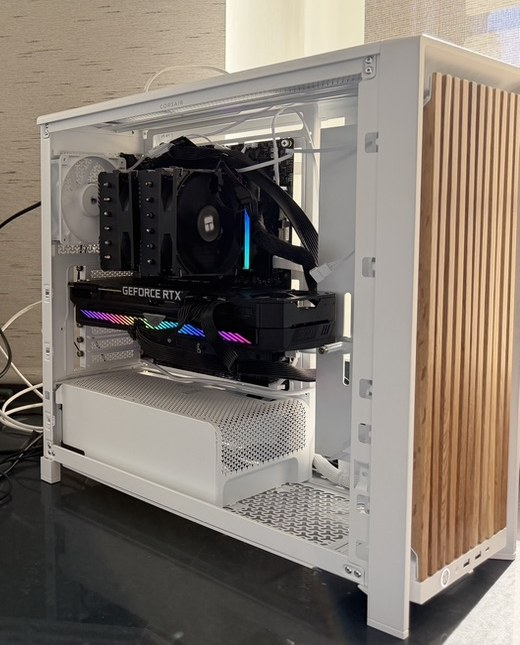

Agent infrastructure
Argus
Infrastructure for running coding agents in parallel and bringing their changes together for review.
Give each agent its own checkout
A Git worktree is a separate directory where you can edit files from the same repository. Argus gives each agent a worktree, so two agents can edit their own copies of a file at the same time.
Argus then brings the changes together for integration and review. That’s where overlapping edits can be reconciled and the combined changes can be evaluated.
Resume from a checkpoint
Argus checkpoints progress as agents work. If a run is interrupted, work can resume from a saved checkpoint.
Shared repository
Agent A Worktree A
Agent B Worktree B
Integration & review
Eureka
